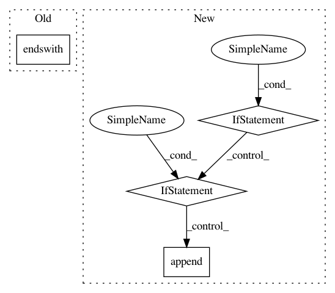

f00bbc9ca76a4a1fd9ddc46954a76237ecd4c616,iky_server/try.py,,extract_chunks,#Any#,16
Before Change
grp1, grp2 = "",""
for s, tp in tagged_sent:
if tp != "O":
if tp.endswith(chunk_type):
if not tp.startswith("B"):
grp2 = tp
grp1.append(s)
After Change
for s, tp in tagged_sent:
if tp != "O":
label = tp[2:]
if tp.startswith("B"):
labeled[label] = s
elif tp.startswith("I") and (label not in labels) :
labels.append(label)
labeled[label] = s
elif (tp.startswith("I") and (label in labels)):
labeled[label] += " %s"%s
return labeled
l = [("sms", "B-TSK"), ("8714349616", "B-MOB"), ("saying", "I-MSG"), ("hello", "I-MSG"), ("how", "I-MSG"), ("are", "I-MSG"), ("you", "I-MSG")]
In pattern: SUPERPATTERN
Frequency: 3
Non-data size: 4
Instances
Project Name: alfredfrancis/ai-chatbot-framework
Commit Name: f00bbc9ca76a4a1fd9ddc46954a76237ecd4c616
Time: 2016-05-21
Author: alfred.francis@pearldatadirect.com
File Name: iky_server/try.py
Class Name:
Method Name: extract_chunks
Project Name: wandb/client
Commit Name: 6316edd2aacd0d2a072a07868971049d3f554d58
Time: 2020-08-25
Author: farizrahman4u@gmail.com
File Name: wandb/internal/file_stream.py
Class Name: CRDedupeFilePolicy
Method Name: process_chunks
Project Name: vatlab/SoS
Commit Name: 4d4d77fa419b92f8b185cea2b2abe8cf598d1eb0
Time: 2016-10-30
Author: ben.bog@gmail.com
File Name: pysos/main.py
Class Name:
Method Name: get_tracked_files